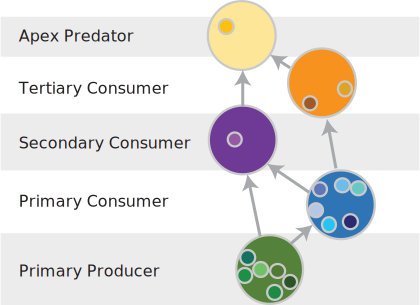

Applications
Having metrics that quantify entire communities can provide useful information to track, manage and promote a system’s health, and its ability to be resistant in the face of disturbance and threats associated with climate change.
One of the first steps in applying these metrics is to measure them in systems we know well. Doing so can help us to validate our metrics and their ability to quantify a system, and interpret the metrics such that we can learn more (make predictions) about how the systems may respond to perturbations.
Two main forest types in the Lake Tahoe basin (A) are Sierran mixed conifer (B) and red fir (C) forests. These two forests differ in species composition, historic fire regimes, elevational range, and climate. Sierran mixed conifer forest is the most widespread forest type in the basin, primarily occurs in the lower montane zone, and is characterized as a dynamic system, with high productivity, high dispersal (colonization), and a historically short fire rotation. Compared to Sierran mixed conifer forest, red fir forest is considered to be a static, low energy system, climate limited because it is primarily occurs in the upper montane zone (often above snow line),and it has a historically moderate fire rotation. The contrasting productivity and disturbance regimes of the systems could be critical to their futures as regional climate changes.

Species and guild richness
Species (A) and guild richness (B - functional groups) are higher in Sierran mixed conifer forests compared to red fir forests. However, just because red fir forest is less biodiverse (less species & guild richness), doesn’t mean it’s less valuable, they are different.
The two forest types occur in different life zones and support some different species. For example, Clark’s nutcrackers are important seed dispersers of conifers, and they are found in higher elevation red fir forests. While Sierran mixed conifer forests are home stripped and spotted skunks, who are mesocarnivores, which can be important in maintaining food web stability.
Maximum chain length
While similar, on average maximum chain length (calculated as the mean guild maximum chain length (mcl)) is higher in Sierran mixed conifer compared to red fir forest. This suggests that SMC will be less resilient to the loss of top (apex) predators compared to red fir forests.
Modularity
Modularity is similar and generally high for both forest types – this can be good because it means that if a random species is lost, then their loss will is less likely to have cascading impacts on the rest of the community. However, high modularity can also occur when there has been a simplification of the system - such as the loss of top predators. This is the case for the central sierras, where predators including grizzly bears, wolves, and wolverines went extinct when westward expansion by pioneers occurred in the late 1800s and early 1900s.

Future applications
Structure vs composition: Evaluating how communities (composition) vary based on structure (canopy density and age) will be important for communicating to managers how best to manage for dynamic landscapes.
Landscape scenarios: LANDIS II scenarios simulate how different management scenarios will impact future landscape composition. Evaluating how communities are impacted by different types of management will be critical to understand how decisions now can support resilient wildlife communities into the future.
Food web scenarios: perturbing food webs in different scenarios can be a valuable tool to understand how communities may respond differentially to perturbations.
